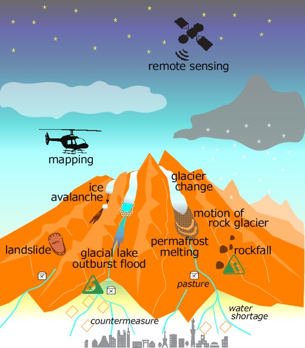

研究
【研究内容】
- 氷河や永久凍土の分布特性，氷河湖決壊洪水や氷河崩落による氷河災害に関する研究．
- 日本における山地の崩落・地すべりなどの斜面崩壊，地形形成プロセス，日本アルプスの雪渓・氷河の形成・維持メカニズムに関する研究．
【研究手法】
GIS（地理情報システム）やリモートセンシング，フィールド調査を基に研究を進める．

【研究テーマ一覧】
- 中央アジアと西ヒマラヤの短命氷河湖研究
- 中央アジアの山岳永久凍土と氷河起源型岩石氷河に関する研究
- デブリ氷河の氷河上湖の出水過程と形成プロセス
- ネパール・ランタン地域の懸垂氷河崩落に関する研究
- ケニア山とキリマンジャロの氷河の質量収支（京大科研A）
- 南極，ラングホブデ氷河の接地線の同定（南極重点研究観測）
- 北アルプスの氷河・雪渓の質量収支と氷河調査
- 白馬大雪渓周辺の岩盤斜面の落石，崩落，雪渓崩落
- 現在動いている地すべりの抽出
【現在所属する学生の研究テーマ】（2024年度）
- ミルラン（研究員）：キルギス山脈における氷河湖の現状
- 杉山（D4）：北アルプス，岩盤斜面の後退プロセス
- 山田（D2）：天山山脈における深層学習を用いた氷河湖のマッピング
- 畠 （D1）:
- 齊藤（M2）：飛騨山脈の多年性雪渓の形成条件
- 髙木（M2）：飛驒山脈，杓子岳北東斜面における土砂移動について
- 水野（M2）：キルギス山脈の氷河起源型岩石氷河の形成条件
- 齊藤（M1）：リモートセンシングに基づく周氷河砂礫斜面の礫移動の空間分布
- 岡田（M1）：天山山脈北部地域における 短命氷河湖の形成に関する融解水の影響について
- 坂井（B4）：東頚城丘陵雁平地区の地すべりの流動と内部構造
- 竹花（B4）：飛驒山脈の現存氷河の研究
- 新井（B4）：キルギス山脈の岩石氷河の流動と内部構造
- 熊谷（B4）：飛驒山脈杓子岳北斜面の岩石氷河の研究
【所属した学生の研究テーマ】
- 五十里：仙台平野の津波被害と地形の関係
- 森田：岩屑被覆氷河の氷河底出水現象→Geomorphology 2017
- K.S：キルギス山脈の短命氷河湖の地形解析
- S.H：キルギス，テスケイ山脈のジェル・ウイ氷河湖の特徴→NHESS 2018
- 山村：天山山脈北部の永久凍土環境→PPP 投稿中
- 佐藤：ALOSを用いた斜面変動の抽出
- 山本：北アルプス・氷河・雪渓の質量収支と環境条件
- ミルラン：イシク・クル湖周辺の氷河湖研究→GeoSciences 2018
- 畠：北アルプス，白馬大雪渓の地形災害
- 渡部：ネパール，ゴルカ地震によるランタン・リルン峰の氷河崩落
- 早乙女：インド・ヒマラヤ，アチナータン谷の氷河湖災害（2017）
- 杵淵：マイクロ波データによる氷河上湖の抽出
- 森：地中レーダーによるアイストンネルの反射特性と検出
- 高玉：天山山脈の山岳永久凍土の空間分布と流動
- 櫻井：中央天山，南イニルチェック氷河の氷河上湖の発達過程→Journal of Glaciology 2022
- 松本：ネパール，ランタン・リルン峰の懸垂氷河崩落
- 奥山：天山山脈の氷河起源型岩石氷河の形成プロセス
- サイモン：ナミビア，国立公園周辺の森林面積変化とその要因
- 井上：東頚城丘陵雁平地区の地すべり変動→日本地すべり学会誌 2024
- 吉村：北アルプス，白馬大雪渓の雪渓崩落
- 本間：南イニルチェック氷河の氷河上湖の形成プロセス
- 有江：北アルプスの氷河・雪渓の質量収支と環境条件→雪氷 2019，The Cryosphere 2022
- 青木：差分干渉SARの地すべり適用の問題→日本地すべり学会誌 2024
- 深田：北アルプスの周氷河平滑斜面
- 瀧ヶ崎：北アルプスの山岳永久凍土
- 武田：アイスコア解析